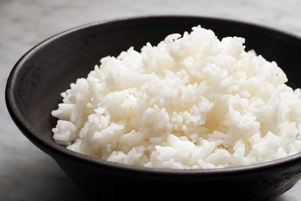

Simple rice recipe
Back to recipes

Description
It's literally just cooked rice. Easy to make, and is a perfect soak for other flavours.
Ingredients:
- 300 grams of white rice
- water, usually twice the amount of rice
- salt, pepper
- a bit of olive oil or butter
Steps to prepare
- Bring the water to boil in a medium saucepan. Add the salt and butter and allow the butter to melt.
- When the water has returned to a boil, stir in the rice. Let the water return to a light simmer.
Stir again, cover the pot and turn the heat down to low. Keep the rice simmering slightly,
and keep the pot covered (you may have to peek after a few minutes to make sure the heat is
at the correct temperature, but then let it cook, covered). Start checking to see if the rice
is tender and all of the liquid is absorbed at about 17 minutes. It may take up to 25,
especially if you are making a larger quantity of rice.
- When the rice is cooked, turn off the heat and let it sit for another couple of minutes to
finish absorbing any liquid. Take off the lid, fluff the rice with a fork and let it sit for
another 2 minutes or so, so that some of the excess moisture in the rice dries off.
| Calories |
Carbohydrates |
Proteins |
Fat |
| 193.9 cal |
37.9g |
3.3g |
3.1g |